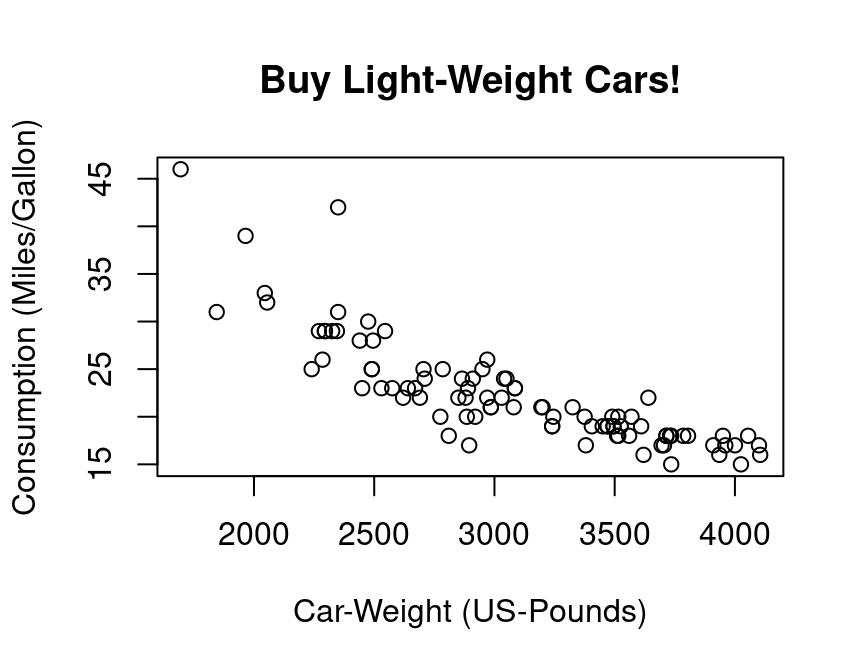

1.4 Simple Regression Analysis using R
Alright, let’s do some statistics with real data. You can download the data HERE. Save it on your computer, at a place where you can find it, and give the path (e.g. "C:\textbackslash path\textbackslash autodata.csv", which references to the data, to the file-argument of the function read.csv():
# ATTENTION! YOU HAVE TO CHANGE "\" TO "/":
auto.data <- read.csv(file = "C:/your_path/autodata.csv",
header = TRUE)
head(auto.data)
If you have problems to read the data into R, go on with these commands. (For this you need a working internet connection!):
# install.packages("readr")
library("readr")
auto.data <- suppressMessages(
read_csv(
file = "https://cdn.rawgit.com/lidom/Teaching_Repo/bc692b56/autodata.csv",
col_names = TRUE)
)
# head(auto.data)
You can select specific variables of the auto.data using the $-operator:
gasolin.consumption <- auto.data$MPG.city
car.weight <- auto.data$Weight
## Take a look at the first elements of these vectors:
head(cbind(gasolin.consumption,car.weight))
#> gasolin.consumption car.weight
#> [1,] 25 2705
#> [2,] 18 3560
#> [3,] 20 3375
#> [4,] 19 3405
#> [5,] 22 3640
#> [6,] 22 2880
This is how you can produce your first plot:
## Plot the data:
plot(y=gasolin.consumption, x=car.weight,
xlab="Car-Weight (US-Pounds)",
ylab="Consumption (Miles/Gallon)",
main="Buy Light-Weight Cars!")
As a first step, we might assume a simple kind of linear relationship between the variables gasolin.consumption and car.weight. Let us assume that the data was generated by the following simple regression model:
\[
y_i=\alpha+\beta_1 x_i+\varepsilon_i,\quad i=1,\dots,n
\]
where \(y_i\) denotes the gasoline-consumption, \(x_i\) the weight of car \(i\), and \(\varepsilon_i\) is a mean zero constant variance noise term. (This is clearly a non-sense model!)
The command lm() computes the estimates of this linear regression model. The command (in fact it’s a method) summary() computes further quantities of general interest from the object that was returned from the lm() function.
lm.result <- lm(gasolin.consumption~car.weight)
lm.summary <- summary(lm.result)
lm.summary
#>
#> Call:
#> lm(formula = gasolin.consumption ~ car.weight)
#>
#> Residuals:
#> Min 1Q Median 3Q Max
#> -6.7946 -1.9711 0.0249 1.1855 13.8278
#>
#> Coefficients:
#> Estimate Std. Error t value Pr(>|t|)
#> (Intercept) 47.048353 1.679912 28.01 <2e-16 ***
#> car.weight -0.008032 0.000537 -14.96 <2e-16 ***
#> ---
#> Signif. codes: 0 '***' 0.001 '**' 0.01 '*' 0.05 '.' 0.1 ' ' 1
#>
#> Residual standard error: 3.038 on 91 degrees of freedom
#> Multiple R-squared: 0.7109, Adjusted R-squared: 0.7077
#> F-statistic: 223.8 on 1 and 91 DF, p-value: < 2.2e-16
Of course, we want to have a possibility to access all the quantities computed so far, e.g., in order to plot the results. This can be done as following:
## Accessing the computed quantities
names(lm.summary) ## Alternatively: str(lm.summary)
#> [1] "call" "terms" "residuals" "coefficients" "aliased"
#> [6] "sigma" "df" "r.squared" "adj.r.squared" "fstatistic"
#> [11] "cov.unscaled"
alpha <- lm.summary$coefficients[1]
beta <- lm.summary$coefficients[2]
## Plot all:
plot(y=gasolin.consumption, x=car.weight,
xlab="Car-Weight (US-Pounds)",
ylab="Consumption (Miles/Gallon)",
main="Buy light-weight Cars!")
abline(a=alpha,
b=beta, col="red")